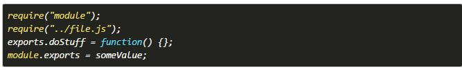
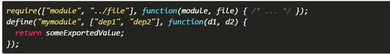
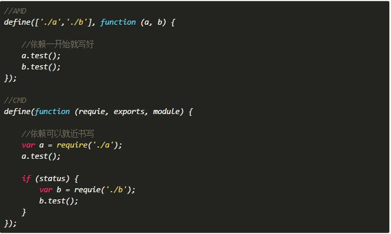

(Node.js,npm)这种方式通过一个叫做require的方法，同步加载依赖，然后返导出API供其它模块使用， 一个模块可以通过exports或者module.exports导出API。 CommonJS规范中，一个单独的文件就是一个模块。 每一个模块都是一个单独的作用域，在一个文件中定义的变量，都是私有的，对其他文件是不可见的。
(requirejs)浏览器端的异步加载方案
(SeaJS)与AMD的主要区别：对于依赖的模块AMD是提前执行，CMD是延迟执行；CMD推崇依赖就近，AMD推崇依赖前置。
